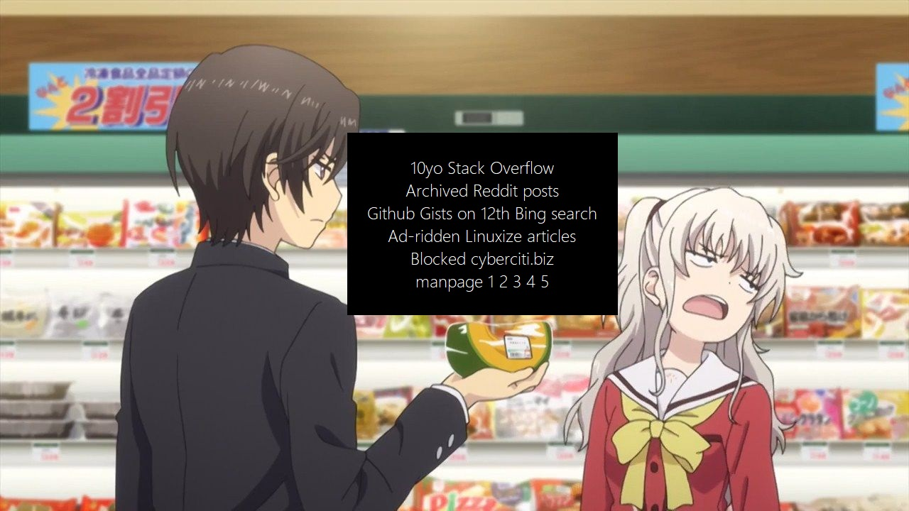

The Convenience Store
Quick links
OOBE Scripts
- Ubuntu
sudo apt install -y curl && curl -fSsL https://script.aaanh.app/static/scripts/ubuntu-oobe.sh | bash
- Fedora
sudo dnf install -y curl && curl -fSsL https://script.aaanh.app/static/scripts/fedora-oobe.sh | bash
- macOS
(curl -fSsl https://script.aaanh.app/static/scripts/macbook-oobe.sh >> macbook-oobe.sh && chmod 700 macbook-oobe.sh && bash macbook-oobe.sh && rm macbook-oobe.sh)
- Windows
iex (iwr 'https://script.aaanh.app/static/scripts/oobe.ps1' -UseBasicParsing)
Nerd/Powerline Fonts
Black background image 4K
https://script.aaanh.app/static/images/black.png
Introduction
Ever get tired of constantly Googling every time you have to install or set up something? I do.
Linux packages or Windows programs or script-based installations, remember what to do is a pain in the ass and an overall crappy DX, as you are constantly ripped out of your flow to get the tools necessary to work. And let’s say you have just bought a brand spanking new computer or setting up a new VM, the momentous urge of diving right into creating things as fast as possible is fleeting every second you spend gathering the dev requirements and dependencies.
That is why I started this convenience store. To add some nitrous 🚀 to [y]our DX.

Security Acknowledgement
While I have high confidence in the platform and networking security of the host for this book, it does not guarantee any type of attack occurring by any means that will harm your system and expose your information.
An example of an attack scenario may be: man-in-the-middle attack while using curl to download and execute the script provided. The attacker might redirect your client to a unaffiliated and malicious copy of this website that download and execute instead a contaminated script.
⚠️ It is crucial that you inspect the script first via the provided link to the static resource.
⚠️⚠️ While I try my best to vet and securely configure the backend, some attacks may happen at your layer, so my disclaimer here is that I will not be held accountable for injuries or damages caused by running the scripts haphazardly.
Contributing
The documentation is not only for me, it’s also for the community!
If you know or believe there is a better way to do things, like a faster and more secure script, fork the repository https://github.com/aaanh/script-convenience-store, make changes, and open a pull request.
CI/CD
The Rust book is compiled with Github Actions, committed to a production branch, and deployed (with that branch) on Vercel as a static HTML site.
About the Author
Anh (@aaanh).
Homepage: https://aaanh.com
CNAME: Only https://script.aaanh.app as of September 2023